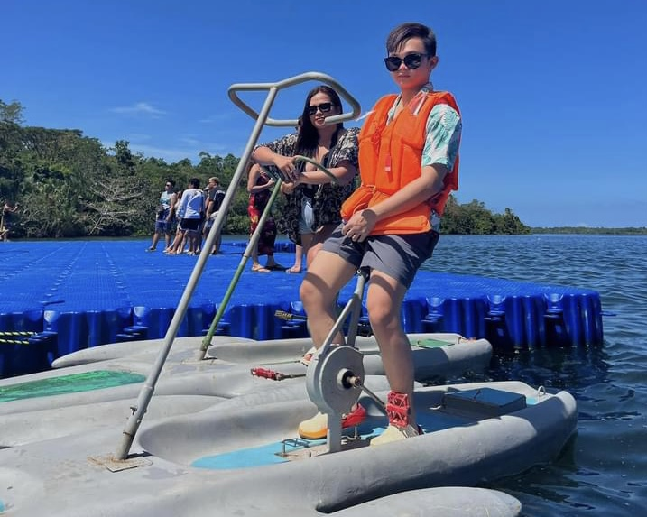
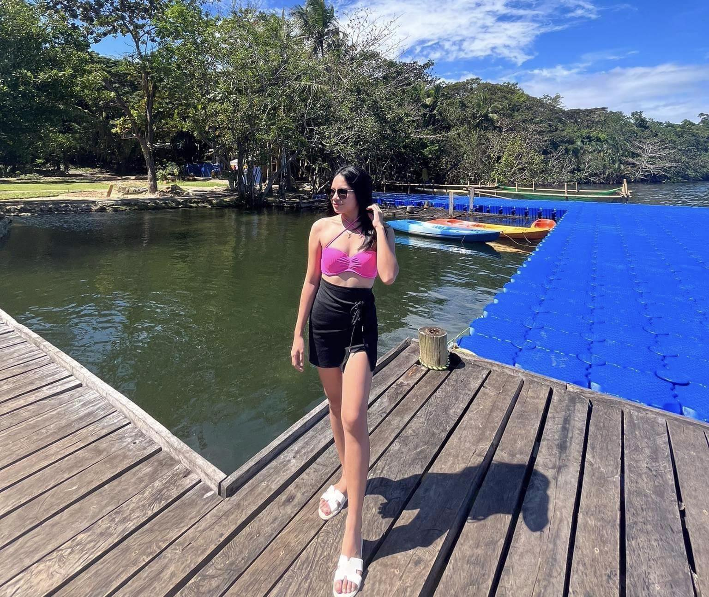
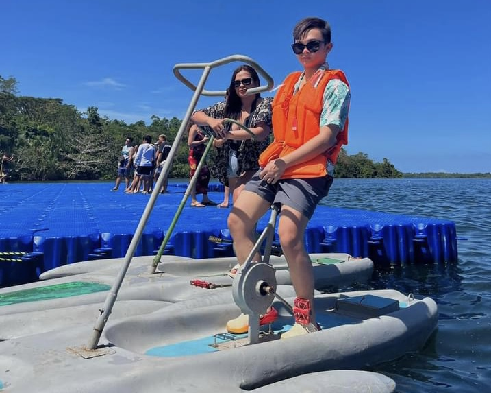
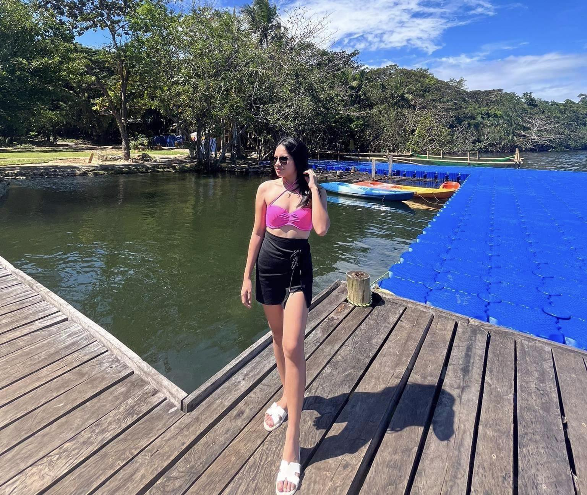

MARCH SHELOU ARDILLO
BLOG
Lost in the rhythm of the waves, chasing sunsets, and collecting memories, one beach at a time.
A JOURNEY TO CAMOTES ISLAND
Attracting tourists due to its lovely beaches of white sand, lush vegetation and rich cultural heritage, Camotes Island is a great place for vacation. Therefore, if you want to reach this tropical paradise, you have to be well-equipped or plan your trip wisely. I had visited the island last year and wrote a guide called Steps on How to Get There and Activities While at Camotes Island.
Before arriving at Camotes Island, you need to think carefully about everything and plan your trip. Ascertain all information about the island’s elevation, climate, and attractions. The must-do list comprises travel documentation, sunscreen, and clothes for hot weather conditions such as the Philippine Islands’ weather with long dry seasons, among others, that will help you if you carry them along with you to Camotes Island.
Booking hotel rooms or bus tickets early enough ensures a smooth journey, but since we were moving on a motorcycle, we didn't mind the bus stuff. Various Cebu ports, including Danao City, which was our preferred port, took us by ferry to Camotes Island. Choose a ferry that will fit within your time frame and budget, and book ahead, especially during the peak season.
Ensure that you come early to the dock in order to maintain a comfortable seat on board and avoid long queues. Once you get to Camotes Island, you can learn about all of the options available to you. This is due to the fact that motorcycles and tricycles are readily available for getting around the island quickly and cheaply, as well as going to various places. There are diverse ways of moving around, such as bargaining with drivers over fares or hiring a motorcycle if you do not have one.
LAKE DANAO PARK
There are choices on Camotes Island for wether a relaxed or adventurous activities, depending on your tastes. For you to make the most of your time, here is an example of our itinerary. In the morning, we started our day on the island. We began by visiting Lake Danao Park.
We enjoyed kayaking, zip-lining, and pedal-boating there, all surrounded by views.
 



AMAZING ISLAND CAVE
The adventure will forever stick in my memory. \ The walk through the awesome Amazing Island Cave late in the afternoon was my favorite because we swam in its underground swimming pool.
We spent the evening of our first day in a cold cabin, then had time to relax in the pool.
MANGODLONG ROCK
Day two had begun with basking at Mangoldong Rock Resort, chilling out while swimming with an ocean view, and also relaxing along the beach.
BUHO ROCK
Then, in the afternoon, we visited Buho Rock, a cliff-side lookout point that offers stunning views of the surrounding coastline as well as blue oceans.
My mother made us prepare because we were about to leave the place, and hence she was busy packing everything. We made plans for our journey to the harbor early enough and said goodbye to the island as we cherished the moments, which hopefully one day will bring us back to the island.
Our travels to Camotes Island allowed us to see its breathtaking scenery, learn more about local customs and traditions, and have a life-changing experience.
If you adhere to these instructions and itinerary, this tropical paradise will always remain in your memory.
So all of your stuff must come along with you; head towards Camotes Island through the waterway, making sure that whenever you do so, you don't let yourself miss out on its attractive nature.